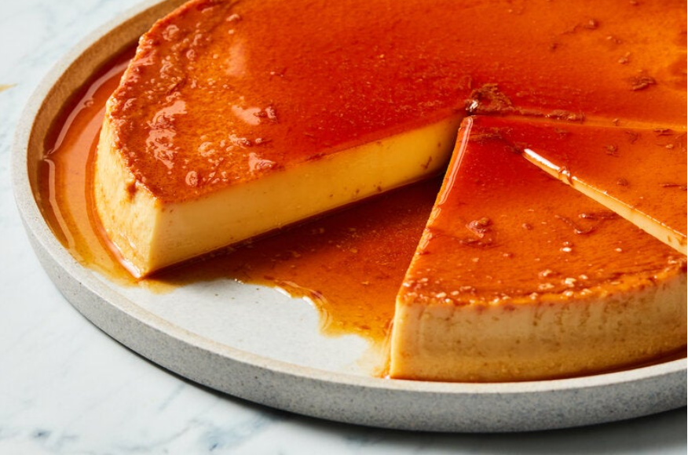

Flan

Description
Enjoy this easy desert recipe originating back to the Roman Empire!
- 1/2 cup granulated sugar
- 1 12-oz. can evaporated milk
- 1 14 oz. can sweetened condensed milk
- 1 cup whole milk
- 4 large eggs
- 1 tablespoon vanilla extract
Steps
- Place a rack in the center of the oven and heat to 350 degrees.
Bring a large pot of water to a boil. Line a roasting pan, large enough to fit a 9-inch-round cake pan with a little extra space on the sides, with a clean cotton kitchen towel. (The towel will keep the round cake pan from sliding and will insulate the flan so it doesn’t overcook.) Set a 9-inch-round (2-inch-deep) cake pan on top of the towel.
- Bring sugar and 2 tablespoons of water to a boil in a small saucepan over medium-high heat, swirling the pan occasionally, without stirring. Cook until caramel is dark amber (about 360 degrees on a candy thermometer), approximately 10 minutes. Carefully pour into the cake pan so that it covers the bottom of the pan and let sit until set, about 10 minutes more. The caramel will crack as it cools, so don’t be alarmed. (To assist with spreading the caramel once it’s in the cake pan, place the pan over very low heat on the stove, warming it enough to be able to tilt it and let the caramel spread. Keep potholders next to the stove — you’ll need them to hold the pan.)
- Combine evaporated milk, condensed milk, whole milk, eggs and vanilla in a blender and process on low speed until the mixture is smooth and creamy, about 30 seconds. (Alternatively, in a mixing bowl, whisk the eggs vigorously for about 30 seconds, then add everything else and whisk until combined.) Skim foam off the top and transfer to the caramel-lined cake pan. Cover tightly with aluminum foil.
- Place the roasting pan in the oven. Pour boiling water into the roasting pan so that it comes ¾ up the sides of the cake pan. (The dish towel should be fully submerged to prevent burning.) Bake flan until it looks set on the outside like Jell-O but will wobble a bit more in the center when gently shaken, 50 to 60 minutes. Remove cake pan from roasting pan, remove but reserve foil and transfer cake pan to a wire rack to let cool. One cool, re-cover with the foil and chill in the fridge overnight.
- When ready to serve, run a paring knife around the edges of the flan to loosen. Invert onto a platter. Serve cold, sliced into wedges.